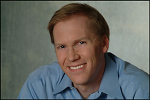

All About Us :: Our Network Chris Haussler Chris Haussler has enjoyed a career that spans many industries, including information technology, corporate finance, print media, and entertainment. A talented writer who recognizes that the medium's only purpose is to conduct its message, he crafts prose that speaks the point without getting in the way of it. Clients have leveraged Chris' communication skills to create professional curricula, public speeches, documentation, business plans, and marketing materials. His insight, breadth of experience, and functional knowledge make him a key collaborator throughout the communication lifecycle. Jody Michael & Associates is pleased to offer his expertise to our clients. Chris holds an MBA from the Kellogg School of Management, Northwestern University, and a bachelors degree in English from Occidental College. |